SOBRE
Eu e os Games:
Me chamo João Victor Rodrigues Campos, nasci no dia 06 de Março de 2002 e tive meu primeiro contato com o mundo dos games em 2006, com 4 anos de idade. Comecei a jogar logo que ganhei meu primeiro videogame, um bélissimo megadrive 3 versão antiga, conquistado com base em muito diálogo("birra"), argumentos("choro") e lógica("surtos") onde com muito amor("ÓDIO") meu pai me presenteou com esse game magnífico.
Na época em que tinha 4 anos eu costumava jogar jogos sensacionais como: Alex Kidd in the Enchanted Castle, Sonic the Hedgehog e Sega Soccer.
Os consoles que eu já tive dês de pequeno até os dias atuais foram: MegaDrive 3, Playstation 2, Xbox 360, Playstation 3 e o Playstation 4 meu atual videogame. Nestes videogames joguei e jogo jogos íncriveis como:
MegaDrive 3:
Alex Kidd in the Enchanted Castle
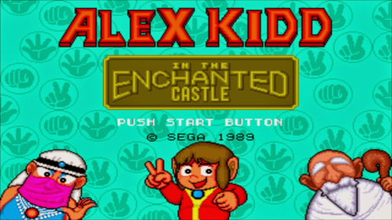Sonic the Hedgehog
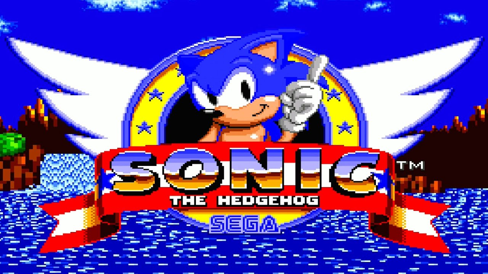Top Gear 2
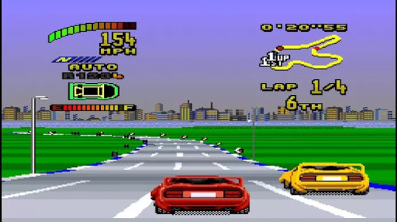Playstation 2:
The Sims 2
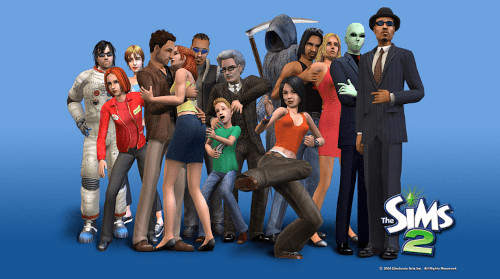God of War
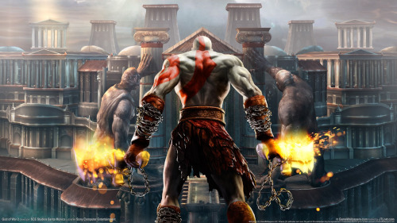Grand Theft Auto San Andreas
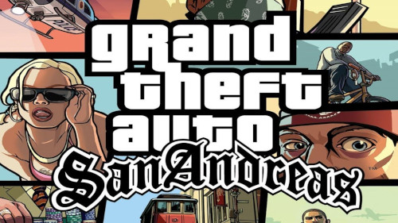The Legacy of Kain Series: Soul Reaver 2
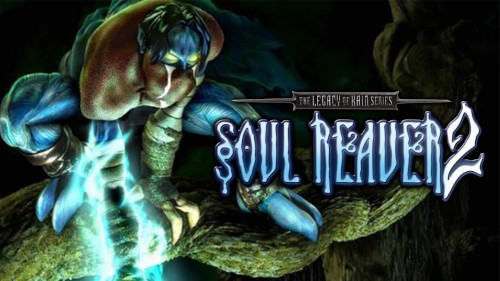Xbox 360:
FarCry 3

Assassin's Creed II
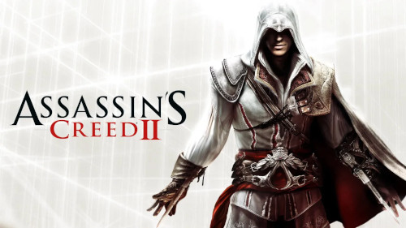Assassin's Creed IV
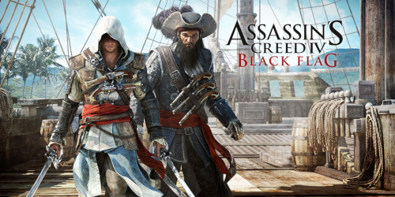O xbox360 tem uma história um pouco delicada para mim, lembro de pedir de presente de natal para minha mãe um PlayStation 3, porém na manhã de natal ganhei o Xbox360, lembro de ter ficado muito feliz de qualquer forma, porém, acabei ficando triste por não poder me divertir em jogos online já que era preciso pagar a xboxlive na época, diferente do ps3 que ainda era gratuito.
Nintendo DS:
Super Mario World
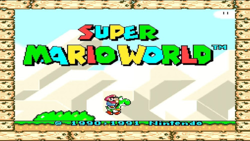The Legend of Zelda: Phantom Hourglass
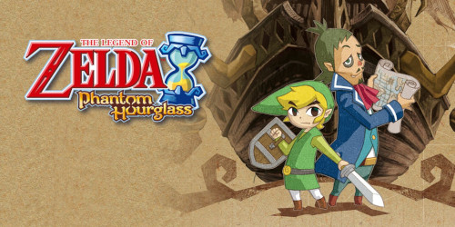PlayStatiion 3:
The last of us
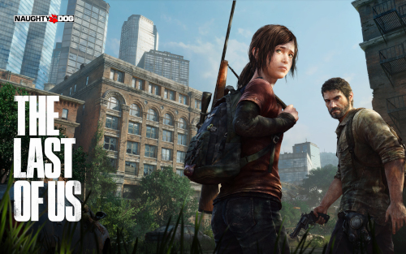Call of Duty Black Ops 2
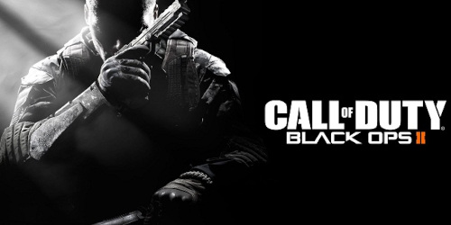Grand Theft Auto V
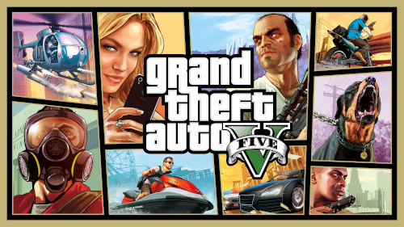Playstation 4:
The Last of us parte 2
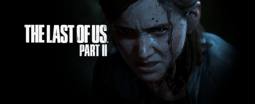Sekiro Shadows Die Twice
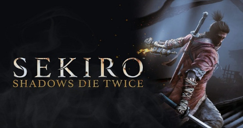Call of Duty Warzone
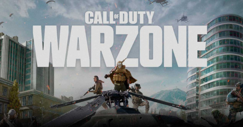Genshin Impact
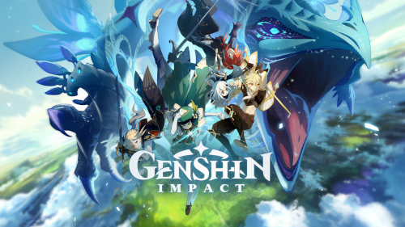Dying Light
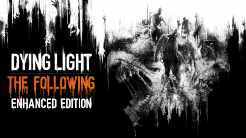Estes foram alguns dos games que me fizeram amar essse universo íncrivel e continuar atrás de mais experiências únicas dentro dos jogos.
Em relação a preferência de games creio que eu não seja tão exigente, já joguei todo tipo de jogo e tenho em mente games íncriveis de vários gêneros diferentes, então tanto faz se o jogo é de ação, RPG(Role PLaying Game), aventura, simulação tanto faz! Eu jogo de tudo dês de que o jogo me entregue uma boa expêriencia.
Minha visão dos videogames no ínicio era apenas de entretenimento algo para me manter distraído, como eu era pequeno eu não tinha preocupações, mas assim que cheguei no ensino médio e os pensamentos da adolescência começaram os jogos se tornaram meu porto seguro, aliviando minha ansiedade e me entregando um lugar onde eu conseguia ser eu mesmo, hoje em dia eu ainda tenho essa mesma visão, por conta dos jogos terem me mantido no caminho esse tempo todo eu tenho um sentimento bem forte em relação a eles, já que eles também me proporcionaram verdadeiras amizades, irmãos para a vida!
Ultimamente aproveito meu tempo livre apenas jogando, mas quando tenho companhia adoro ir à praia e mergulhar, até já fiquei um dia inteiro de tanto que gosto (kkkkkkk), mergulhar me relaxa e parece que tira sentimentos ruins do corpo, além disso também gosto de desenhar, não sou um expert mas consigo me virar.
[fotos de desenhos]
Eu e meus sonhos:
Meu maior sonho é conseguir ficar rico e poder ser meu próprio chefe um dia, e para isso tenho usado boa parte do meu tempo livre estudando, procuro a cada dia aprender mais sobre desenvolvimento e programação, área que me interessou muito nos últimos meses e por estar em grande crescimento, acredito que seja um ótimo caminho para conquistar o meu espaço. Como prova do meu foco nesse sonho esse site inteiro que você(leitor) está visitando foi construído como parte dos meus estudos em HTML(Hypertext Markup Language), CSS(Cascading Style Sheet) e futuramente um complemento de JS(JavaScript).
Eu e a FIRMA
Para mim, a FIRMA é muito mais que apenas um grupo de jogos, somos uma família que cresceu por conta da vontade de cada um, com anos de história ela é a junção dos sentimentos de todos os membros, sendo eles bons ou ruins, se trata de um lugar onde podemos ser nós mesmos, brincar, zoar, rir e até chorar se for preciso, acolhemos uns aos outros com o intuito de se distrair do mundo caótico. Tenho só a agradecer por fazer parte desse grupo incrível que me proporcionou amizades para a vida, irmãos que terei sempre na memória e no coração. OBRIGADO FIRMA!